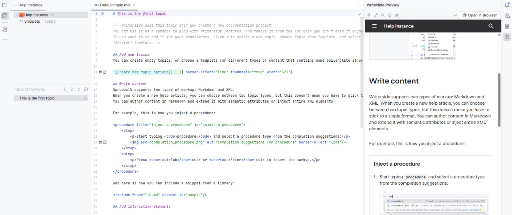
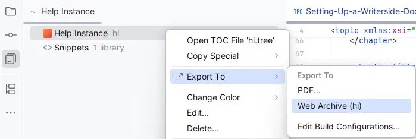
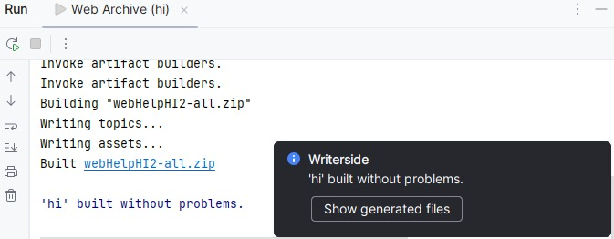

Setting Up a Writerside Documentation Project
Learn how to create, build, and publish a Writerside documentation project.
Prerequisites
Before you begin, make sure you have the following:
IntelliJ IDEA (Community Edition is sufficient)
Git installed on your machine
A GitHub account
Step 1: Install the Writerside plugin
In IntelliJ IDEA, go to and open the Marketplace tab.
Search for Writerside.
Click Install, then restart the IDE when prompted.
After the restart, you will see a Writerside pane in the left sidebar. This confirms the plugin is active.
Step 2: Create a new documentation project
Go to .
Select Writerside on the left, then select Starter Project, and click Next.
Specify the name and location for your project and click Create.
When the project opens, you'll see the Writerside tool window on the left with your instance (your documentation site). The Table of Contents pane contains the starter topic. The editor opens in the center, and the preview opens on the right.

Step 3: Add a new topic
Topics are the individual pages of your documentation. Writerside supports both Markdown and XML. This guide uses XML topics: they support semantic elements and content reuse, which help as your docs grow.
In the Table of Contents pane, click +.
Select Empty XML Topic.
Specify a title and filename for your topic.
Write your content using semantic elements.
Step 4: Build the documentation locally
Run a local build to catch errors before publishing.
In the Writerside tool window, right-click your instance and select .

Click Run.
After the build completes, check the Run tool window for errors and warnings.
Click Show generated files in the bottom-right popup to open the output directory.

Extract the ZIP archive and open your topic's HTML file in a browser to preview it.
Step 5: Push to GitHub
Push your source to GitHub to keep it version-controlled and shareable.
In IntelliJ IDEA, go to . If you don't see the Git menu, enable Git integration first in Settings under .
Enter a repository name and uncheck Private. If prompted, authorize IntelliJ IDEA in your browser, then return to the IDE.
Click Share. In the Add Files For Initial Commit dialog, select the files you want to track and click Add.
Verify your setup
To confirm everything works, check that:
Your project opens in IntelliJ IDEA with the Writerside tool window visible
Your topic renders in the preview pane without errors
A local build completes successfully
Your repository is visible on GitHub with all source files committed
What's next
Now that your project is set up, here's what to explore next:
Explore the Semantic markup reference to learn more elements
Set up automated publishing via GitHub Actions
Learn about content reuse with snippets and includes